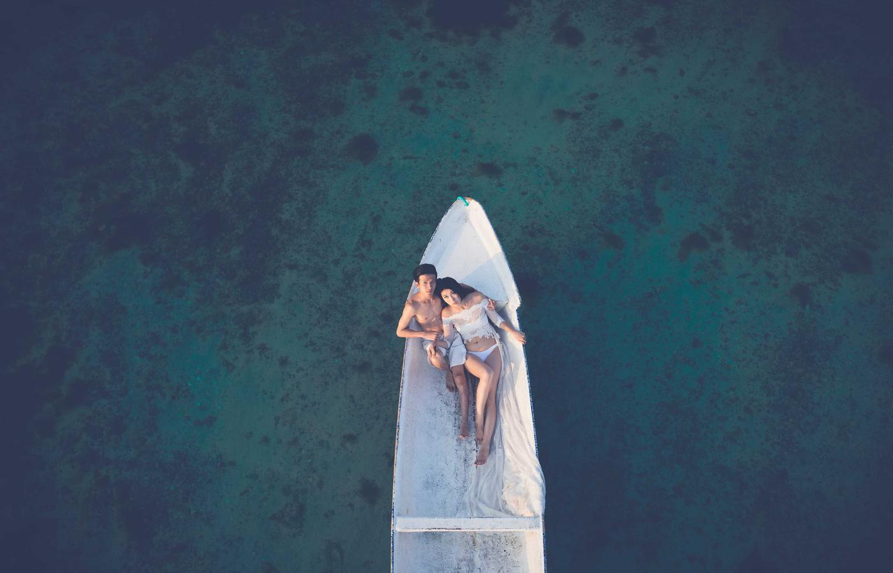
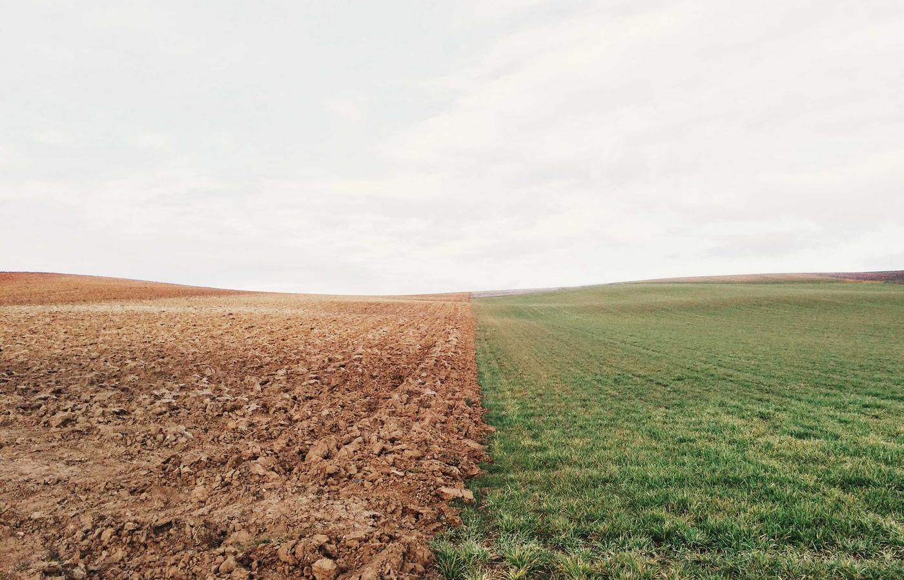
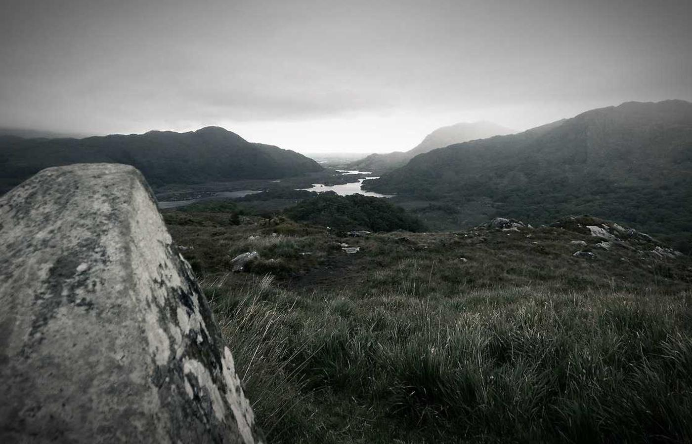
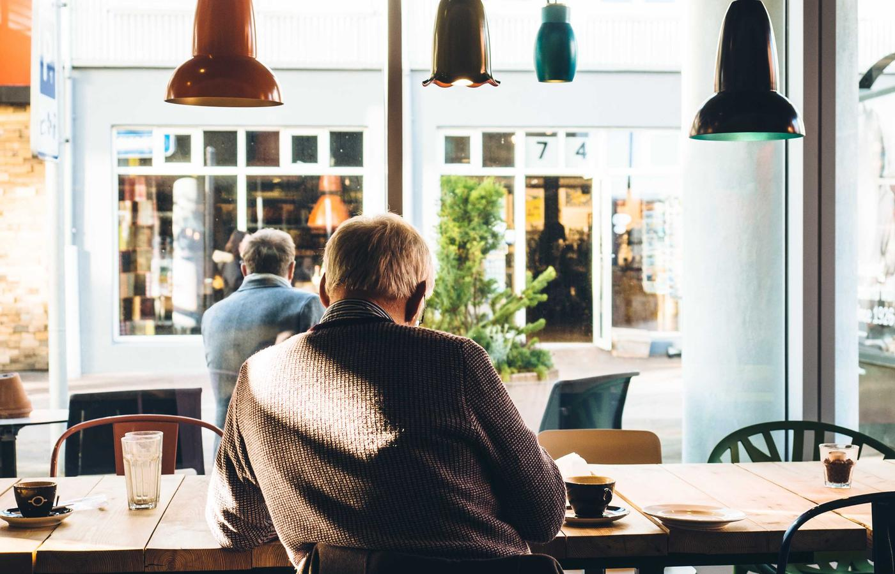

Главные места для посещения
Айя-София

Один из самых известных символов города, где в архитектуре переплетаются эпохи. Рекомендуется приходить утром, чтобы избежать больших очередей.
Голубая мечеть

Действующая мечеть с узнаваемым силуэтом и богатым внутренним декором. При посещении учитывайте дресс‑код и время молитв.
Дворец Топкапы

Историческая резиденция османских султанов с обширной территорией, музеями и видами на Босфор.
Галатская башня

Лучшее место для панорамных снимков центра города. Удобно сочетать с прогулкой по району Каракёй и улице Истикляль.
Гранд-базар

Один из крупнейших крытых рынков мира: специи, текстиль, керамика, украшения и сувениры.
Прогулка по Босфору

Классический опыт для туриста: город раскрывается с воды, особенно красиво во второй половине дня и на закате.
Полезный совет
Планируйте посещение популярных мест на будние дни и первую половину дня, чтобы тратить меньше времени в очередях.